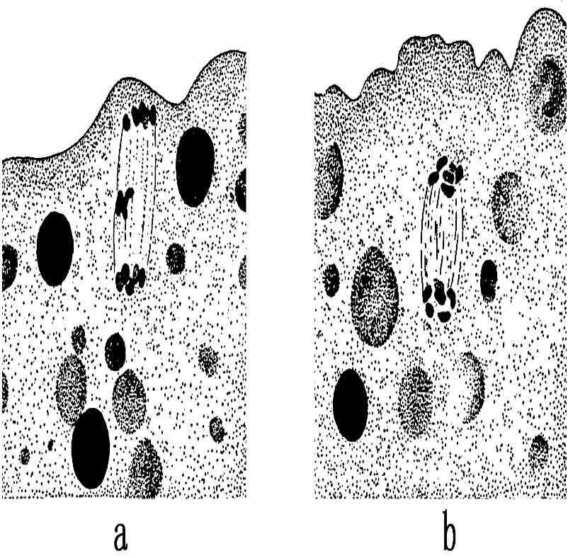

二倍型卵子排出一条X染色体，从而产生雄性
像上面所说的，某种瘤蚜（Phylloxerans）的雌虫在单性生殖周期的末期出现，它产生比较小的卵子。刚在小卵成熟之前，X染色体集合起来（共有四条）。卵子只分出一个极体；有两条染色体进入极体（图134）。这时每一条常染色体分裂为二，排出其中的一条。卵内留下二倍数目的常染色体和半数的X染色体。卵子借单性发育，形成雄虫。

图134 a.瘤蚜（Phylloxerans）成雄卵子第一次成熟分裂的纺锤体；有两条染色体滞留在纺锤体上，最后排出卵外，卵核内只留下五条染色体。
b.成雄卵子第一次成熟分裂的纺锤体；六条染色体分裂，卵核内仍留下六条
蚜（Aphids）也有同样的过程。虽然还没有看到卵子排出一条X的实在情况（只有两条X），但是卵子在放出唯一的极体以后，便少了一条染色体，可知它一定像在瘤蚜一样，失去了一条染色体。
以上两类昆虫决定雌雄的过程，与其他昆虫的过程不同，但仍然是利用同一机制，在不同形式下达到同一结果。
还有另一件非常有趣的事实。产生雄卵的瘤蚜雌虫，它所产生出的卵子，比以前各代单性生殖的卵子小些。所以在卵子排出X染色体以前，便可以看出卵子的命运。这里，雌雄性别似乎决定于卵子的大小，也就是说，决定于卵内胞质含量的多少。不过这种推论是不合逻辑的，因为卵子必须排出半数的X染色体，才能成为雄性。我们不知道如果全部X都留下时会发生什么变化，卵子也可能会发育成雌虫。总之，这里事实是：母体内的一种变化，引起了小卵的形成，小卵又减少了半数的X染色体来变成雄虫。至于母体内变化的性质，目前却不知道（注：雌性轮虫Dinophilus apatris产生两种大小的卵子。两种卵子都排出两个极体，形成单倍型原核，两者受精后，大卵发育成雌，小卵发育成雄（Nachtsheim）。卵巢为什么产生两种卵子，目前完全不知道。）。